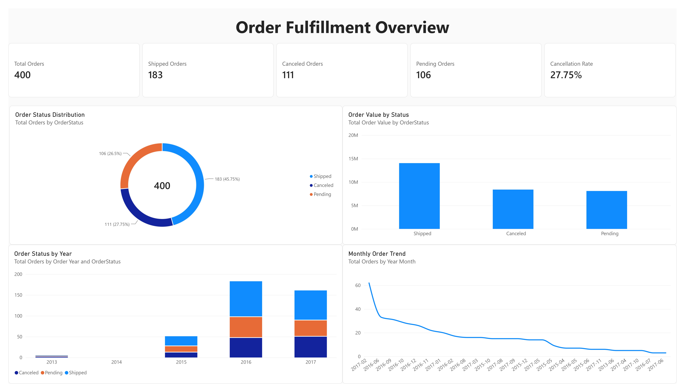
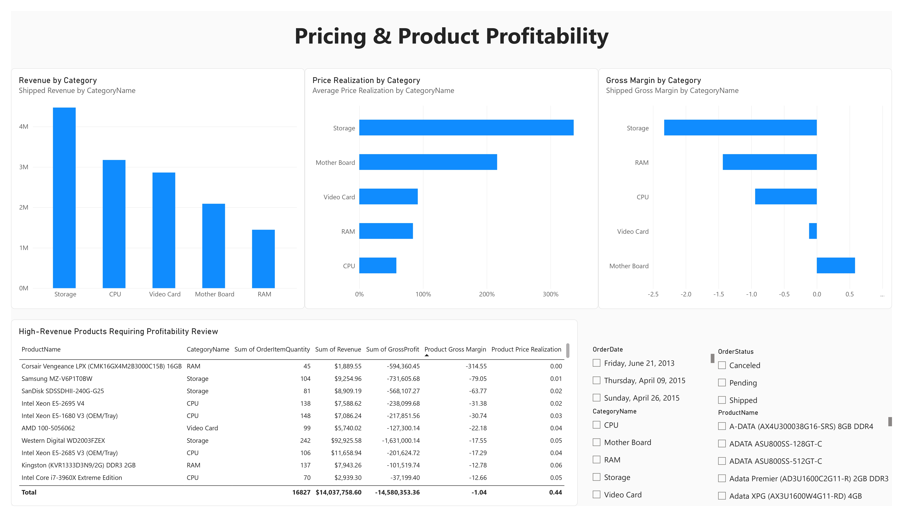

A SQL, Python, and Power BI project analyzing order status, transaction pricing, price realization, and realized product profitability from a relational sales dataset.
View GitHub RepositoryMetrics are calculated from the supplied dataset. Profitability values are analytical results from the dataset and are not presented as verified accounting figures.
MySQL: relational joins and analytical views.
Python: data preparation and exploratory analysis.
Power BI: KPI cards, status analysis, trends, category analysis, and product profitability review.


The supplied data contains large differences between transaction price, list price, and standard cost. The dashboard therefore treats profitability as a dataset-derived analytical proxy and flags unusual patterns for further investigation rather than making claims about a real company's financial performance.